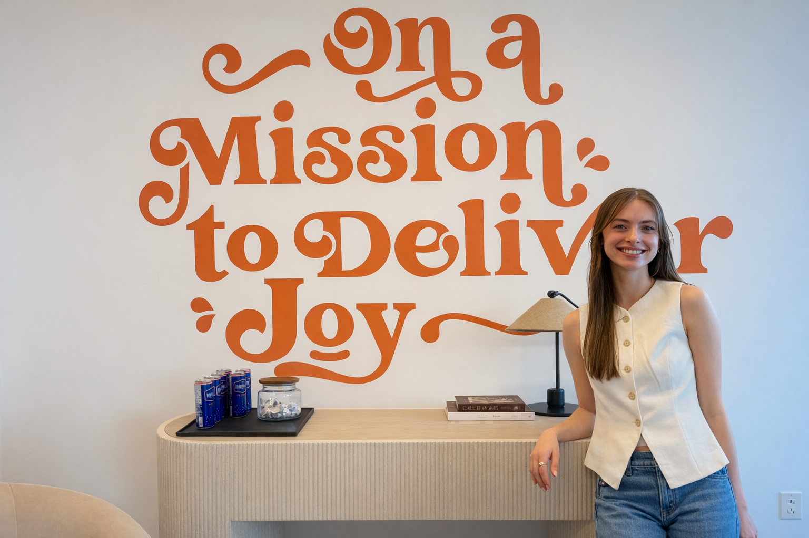

About
Nicole Pasek
I'm a senior product designer with a track record of shipping products that scale. Most recently, I introduced and led the end-to-end design of Shop+Pay at Skip, Canada's first courier-led in-store shopping experience, taking it from a blank canvas to a live product used by hundreds of thousands of couriers across the country.
I work best at the intersection of complexity and clarity. Whether I'm running stakeholder workshops, deep in a research synthesis, or sitting alongside a developer in VS Code, I'm focused on making the right thing and making it well. I care about systems, accessibility, and the kind of craft that holds up at scale.
I stay close to where design is heading. I use AI tools, including large language models, as part of my everyday workflow, from sharpening copy to accelerating early exploration. I think the best designers right now are the ones who evolve with their tools without losing sight of the humans they're designing for.
When I'm not designing, I mentor students at the University of Waterloo, lecture at the Stratford School of Interaction Design and Business, and participate in panel discussions at BrainStation. Giving back to the design community is something I take seriously.
